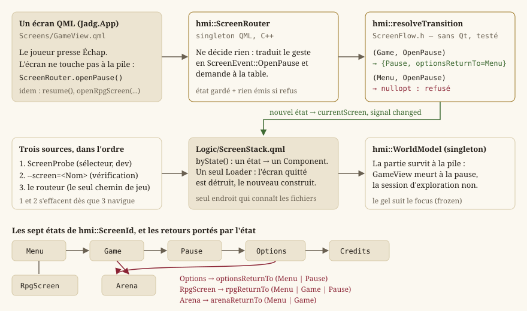
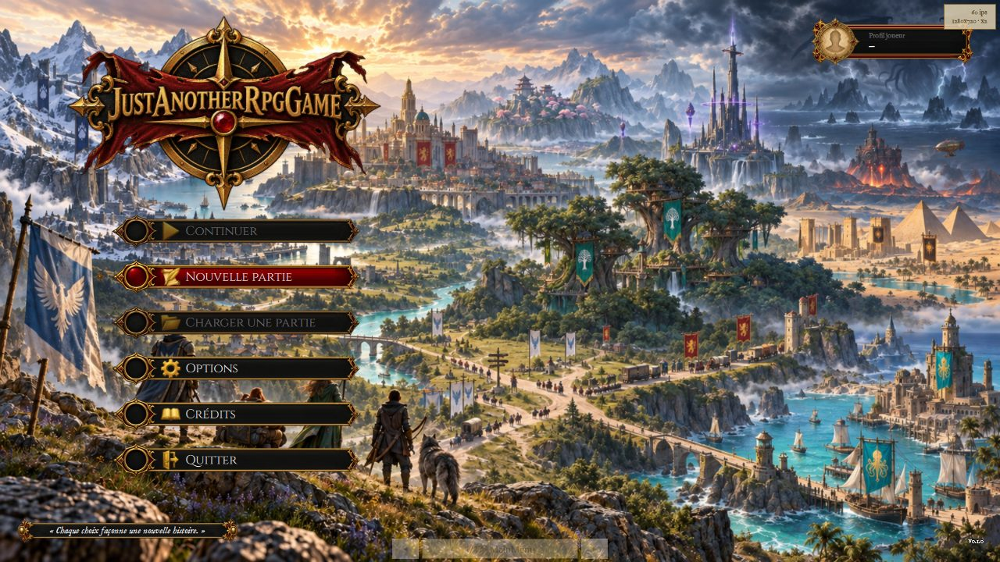
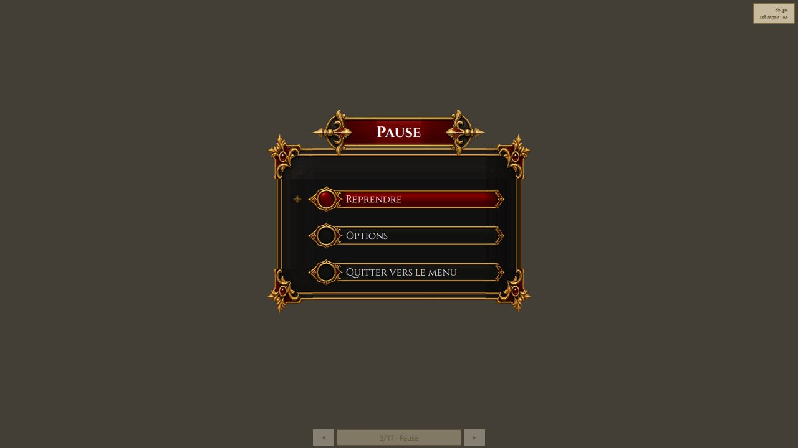

Écrans, navigation et boucle de jeu
Cette page explique comment le jeu passe du menu à la carte, à la pause, aux options, aux écrans du RPG ou au Colisée, et ce que la ligne de commande peut imposer à ce parcours. Les écrans sont des fichiers QML (IHM Qt — deux applications, deux technologies) ; la table de transitions qui décide où l'on peut aller est, elle, du C++ pur, testé sans fenêtre, que hmi::ScreenRouter se contente d'appeler pour le compte du QML. L'éditeur de niveaux est un binaire séparé (Éditeur de niveaux) : aucun chemin du jeu n'y mène.
Périmètre de la page : Source/HMI/Presentation/ScreenFlow.h et RpgScreens.h, Source/HMI/Runtime/ScreenRouter.h, Source/HMI/Game/WorldPlay.h et LaunchOptions.h, et les fichiers de câblage Source/App/Game/Qml/Main.qml, Logic/ScreenStack.qml, Logic/ScreenProbe.qml.
Ce qu'est une machine à états d'écrans
Un jeu n'affiche qu'un écran à la fois, et tous ne se joignent pas depuis partout : on ouvre la pause depuis la carte, pas depuis le menu ; on revient des options là d'où on les a ouvertes. La façon la plus sûre d'écrire cela est une machine à états finis : un ensemble d'états (les écrans), un ensemble d'événements (ce que le joueur demande), et une table qui dit, pour chaque couple état × événement, le nouvel état — ou rien, si le geste n'a pas de sens ici.
Le moteur sépare cette table de tout ce qui l'affiche : la table est une fonction pure, sans Qt ; le routeur Qt l'appelle ; la pile d'écrans QML traduit l'état en fichier affiché. Trois couches, trois responsabilités, et la première se teste sans ouvrir une fenêtre (EX-NFR-010).
{kind=link}

La machine à états : hmi::ScreenFlow
Source/HMI/Presentation/ScreenFlow.h porte la navigation comme une table pure, sans dépendance Qt — même patron que hmi::panelForTool dans l'éditeur. Un seul point d'entrée :
hmi::resolveTransition(current, event)— résout unhmi::ScreenEventdepuis l'état courant (hmi::ScreenState) vers le nouvel état, oustd::nulloptsi la transition est interdite depuis cet écran. L'appelant garde alors son état inchangé : jamais de bascule silencieuse (EX-GP-041). La fonction estnoexceptet ne lit que ses arguments.
hmi::ScreenId compte sept états : Menu, Game (la carte qu'on parcourt), Options, Pause, Credits, RpgScreen (l'un des écrans du RPG — fiche, inventaire, carte… —, dont RpgScreens.h tient la liste) et Arena (le Colisée, LOT-50). L'arène est un écran de premier niveau, comme Game, parce que c'est un mode du jeu et non un écran qui se consulte pendant une partie.
hmi::ScreenEvent compte treize événements : OpenMenu, OpenGame, OpenOptions, CloseOptions, OpenPause, ResumePause, QuitPauseToMenu, OpenCredits, CloseCredits, OpenRpgScreen, CloseRpgScreen, OpenArena, CloseArena. Un seul OpenRpgScreen sert les neuf écrans du RPG, et un seul OpenOptions sert le menu et la pause.
La table, telle que le code l'écrit
| Depuis | Événement admis | Vers |
|---|---|---|
Menu | OpenGame, OpenOptions, OpenCredits, OpenRpgScreen, OpenArena, OpenMenu | Game, Options, Credits, RpgScreen, Arena, Menu |
Game | OpenPause, OpenRpgScreen, OpenArena, OpenMenu | Pause, RpgScreen, Arena, Menu |
Pause | ResumePause, QuitPauseToMenu, OpenOptions, OpenRpgScreen | Game, Menu, Options, RpgScreen |
Options | CloseOptions | optionsReturnTo (Menu ou Pause) |
Credits | CloseCredits | Menu |
RpgScreen | CloseRpgScreen | rpgReturnTo (Menu, Game ou Pause) |
Arena | CloseArena, OpenMenu | arenaReturnTo (Menu ou Game), Menu |
Tout ce qui n'est pas dans cette table est refusé. OpenGame depuis la pause, par exemple, n'existe pas : reprendre est ResumePause, et cette distinction est ce qui permet de tester que la reprise revient bien sur la même partie.
La provenance est un attribut de l'état
hmi::ScreenState porte l'écran courant et trois retours : optionsReturnTo dit si CloseOptions revient au menu ou à la pause, rpgReturnTo d'où un écran du RPG a été ouvert, arenaReturnTo si le Colisée revient au menu ou à la carte (quand le héraut y envoie, LOT-09). Jamais une variable « écran précédent » posée à côté de la machine : une telle variable devrait être mise à jour par chaque appelant, et l'un d'eux finirait par l'oublier. Ici, la table écrit le retour en même temps que l'état, et operator== sur la structure entière rend chaque transition vérifiable d'une égalité.
Invariant : après toute transition, les retours non pertinents sont remis à Menu — un état n'emporte jamais une provenance périmée d'un cycle précédent.
Les écrans du RPG : hmi::RpgScreens
Source/HMI/Presentation/RpgScreens.h est le catalogue des écrans que le RPG consulte pendant une partie (LOT-68, EX-IHM-090), logique pure comme ScreenFlow.
hmi::RpgScreenId— les neuf écrans, dans l'ordre du cycle de navigation :CharacterSheet,Skills,Inventory,QuestJournal,WorldMap,Dialogue,Merchant,Company,CombatHud.hmi::RPG_SCREEN_COUNTvaut 9.hmi::RpgSuperposition—PausesGame(la simulation est suspendue tant que l'écran est ouvert) ouWhileWalking(on le consulte en marchant). La règle est portée par la description de l'écran, jamais par le code qui l'ouvre (EX-IHM-091) : une règle décidée à l'ouverture se contredirait d'un point d'appel à l'autre. Seuls la carte du monde et l'ATH de combat se lisent en marchant.hmi::RpgBlockKind,hmi::RpgField,hmi::RpgContentBlock,hmi::RpgScreenLayout— l'ossature d'un écran en données : deux colonnes de blocs, chaque bloc d'un des sept genres (Fields,Grid,List,Prose,Portrait,Track,ActionBar). UnRpgFieldassocie une clé de libellé à un identifiant de valeur (valueId) — le contrat par lequel un écran se remplit :hmi::characterSheetValuesproduit une table indexée par ces identifiants, et un test vérifie qu'aucun des deux côtés n'en invente un que l'autre ignore.hmi::RpgScreenDescriptor— l'identité complète d'un écran :objectName,titleKey,superposition,layout.hmi::rpgScreens()— la table entière, dans l'ordre du cycle ;hmi::rpgScreenDescriptor(id)— une entrée.hmi::nextRpgScreen(id)/hmi::previousRpgScreen(id)— le cycle : du dernier on revient au premier. C'est ce qui permet d'atteindre n'importe quel écran depuis n'importe quel autre sans repasser par le menu (EX-IHM-090), au geste des gâchettes de la manette.hmi::pausesGame(id)—truesi l'écran suspend la simulation.
Depuis le LOT-86, les écrans sont dessinés en QML (Source/Ui/Screens/*Form.ui.qml), et le rendu générique par widgets que ce fichier décrivait n'existe plus. La table reste la source de vérité de deux choses que le QML ne décide pas : quel écran suspend le jeu, et quels identifiants de valeur un écran attend — ce que hmi::CharacterSheetModel publie, et ce que les tests de test_rpg_screens.cpp contrôlent.

Le routeur et la pile d'écrans
hmi::ScreenRouter (Source/HMI/Runtime/ScreenRouter.h) est un singleton QML. Il ne décide rien : chaque méthode appelle resolveTransition, garde l'état courant si la transition est refusée, et publie sinon currentScreen et currentRpgScreen par le signal changed. Rien n'est émis pour un geste refusé : l'interface ne doit pas se rafraîchir pour ce que la table n'autorise pas.
Méthode Q_INVOKABLE | Événement joué | Remarque |
|---|---|---|
hmi::ScreenRouter::openMenu | OpenMenu | |
hmi::ScreenRouter::openGame | OpenGame | « Nouvelle partie » |
hmi::ScreenRouter::openOptions / closeOptions | OpenOptions / CloseOptions | retour selon optionsReturnTo |
hmi::ScreenRouter::openPause / resume / quitToMenu | OpenPause / ResumePause / QuitPauseToMenu | |
hmi::ScreenRouter::openCredits / closeCredits | OpenCredits / CloseCredits | |
hmi::ScreenRouter::openArena / closeArena | OpenArena / CloseArena | retour selon arenaReturnTo |
hmi::ScreenRouter::openRpgScreen(screen) / closeRpgScreen | OpenRpgScreen / CloseRpgScreen | retient aussi lequel |
hmi::ScreenRouter::openDialogue(dialogueId) | OpenRpgScreen sur Dialogue | transporte l'identifiant |
hmi::ScreenRouter::nextRpgScreen / previousRpgScreen | aucun | change currentRpgScreen dans le cycle, sans repasser par la table |
Deux propriétés de plus : dialogueId, le dialogue que l'écran de dialogue doit jouer — c'est la carte qui le nomme en ouvrant la conversation du PNJ visé (LOT-09), et l'écran n'a plus de dialogue écrit en dur ; et developerBuild, constante, vraie dans un binaire de développement et fausse dans un binaire livré. Les énumérations ScreenRouter::Screen et ScreenRouter::RpgScreen reprennent hmi::ScreenId et hmi::RpgScreenId, exposées à QML par Q_ENUM.
Le routeur publie un état, jamais un nom de fichier : la correspondance entre état et écran vit en QML, dans Source/App/Game/Qml/Logic/ScreenStack.qml. Chaque écran y est enveloppé dans un Component, construit par un Loader seulement une fois choisi — les écrans ne vivent jamais tous en même temps. Trois sources décident du composant, dans cet ordre : le sélecteur de développement s'il a servi, puis --screen=, puis le routeur (byState()). Des composants typés et non des chemins construits : un écran renommé fait échouer qmllint, pas le jeu.
Aucun écran ne bascule lui-même vers un autre en manipulant la pile : il appelle le routeur (ScreenRouter.openPause() depuis la vue de jeu sur Échap, ScreenRouter.resume() depuis la pause…), et la pile suit.
{kind=link}

Les outils de vérification, et pourquoi ils ne sont pas des chemins de jeu
--screen=<Nom> ouvre un écran directement, et Logic/ScreenProbe.qml fait de même en cours d'exécution : deux boutons posés en bas de la fenêtre font défiler les dix-sept noms de ScreenStack.screenNames (les quinze écrans, la galerie des briques Gallery et la galerie des assets AssetGallery, qui ne sont pas des écrans du jeu). Ils existent parce que plusieurs écrans sont dessinés mais pas encore alimentés — sans eux, ils ne seraient atteignables par aucun chemin de jeu, et ne se vérifieraient donc pas.
Le sélecteur se lie à ScreenRouter.developerBuild et n'existe pas dans un binaire livré, garanti par la construction ; et il rend la main au routeur dès que le jeu navigue de lui-même (Connections sur ScreenRouter.changed). Sans cela, l'écran choisi restait épinglé : Échap ne fermait plus rien, et la navigation aurait paru cassée par l'outil censé permettre de la vérifier.
La vue de jeu et la session qui lui survit
Screens/GameView.qml pose la surface de rendu QRhi (WorldViewport, Rendu 2D : de la scène à l'écran) sur le singleton hmi::WorldModel, qui porte la session d'exploration (core::ExplorationSession) à travers hmi::WorldPlay. La session est un singleton précisément parce que la pile détruit la vue de jeu quand un autre écran la remplace : une session possédée par l'écran mourrait avec lui, et l'on reviendrait de la pause, du dialogue ou du sable sur une carte neuve, héros à la porte. GameView ne lance donc WorldModel.startNewGame() que si aucune carte n'est chargée.
Le gel suit le focus : ce qui recouvre la vue de jeu (dialogue, Colisée, pause, écran du RPG) lui prend le focus, et la vue relâche alors les directions tenues ; le dialogue pose en plus WorldModel.frozen. Un seul chemin pour tous les écrans plutôt qu'un par écran. Quel écran du RPG suspend la simulation est dit par hmi::pausesGame, pas par la table de transitions, qui ne connaît pas ces écrans un par un.
hmi::WorldPlay : la mise en scène partagée avec l'éditeur
Source/HMI/Game/WorldPlay.h réunit ce qu'il faut pour parcourir une carte et la dessiner, sans Qt : une core::ExplorationSession, la table d'apparence du lieu (hmi::PlaceAppearance, lue sous Scene/<lieu>/appearance.json) et les figurines qu'on pose dessus. Le jeu (hmi::WorldModel) et l'essai immédiat de l'éditeur (hmi::EditorViewport, EX-EDIT-055) le partagent : deux copies de cette mise en scène divergeraient au premier réglage, et l'essai montrerait une carte que le jeu ne montre pas — exactement ce qu'un essai ne doit jamais faire.
hmi::WorldPlay::WorldPlay(loader, assetsDirectory)— reçoit le chargeur de cartes (core::WorldTravel::directoryLoaderen jeu ; en essai, un chargeur qui sert d'abord le brouillon) et le dossier des assets. Pas deQObject, pas d'horloge : chaque appelant garde sa cadence et ses signaux.hmi::WorldPlay::enter(mapId, arrival)— entre sur une carte au point d'arrivée nommé (vide : l'entrée de la carte), recharge la table d'apparence du lieu ;falsesi la carte ne s'ouvre pas, la session dit pourquoi.hmi::WorldPlay::step(intent, seconds)— un pas de simulation avec l'intention du joueur (core::ExplorationIntent) ; rend unhmi::WorldPlayStep: les événements de la session,heroMoved(la caméra suit) etsceneChanged(la scène doit être recomposée : carte changée, ou bande de figurine du héros basculée entreidleetwalk).hmi::WorldPlay::figures()— les figurines de la carte courante, les PNJ puis le héros, qui passe devant ;hmi::WorldPlay::snapshot()— l'instantané en valeurs quehmi::WorldSceneRendererdessine, vide hors carte ;hmi::WorldPlay::diamondRatio()— le rapport du losange isométrique du lieu.hmi::WorldPlay::heroFigure()/setHeroFigure— la figurine du héros (WorldPlay::DEFAULT_HERO_FIGURE,jade, tant que la création de personnage n'en nomme pas une autre) ;hmi::WorldPlay::session()— la session, en lecture ou en écriture.
Pause
Échap sur la vue de jeu ouvre l'écran de pause (Screens/Pause.qml) : Reprendre, Options, Quitter vers le menu. Clavier et pointeur pilotent le même currentIndex ; Échap y reprend la partie. Les options ouvertes depuis la pause y reviennent (optionsReturnTo), et reprendre ramène sur la carte là où on l'avait laissée — la session n'a pas bougé (EX-IHM-004).
{kind=link}

Ce que la ligne de commande impose : hmi::LaunchOptions
Source/HMI/Game/LaunchOptions.h porte les deux moitiés de l'essai complet de l'éditeur (LOT-EDITOR-10) : l'éditeur écrit la ligne de commande du jeu, le jeu la relit. Les écrire chacune de son côté ferait diverger la virgule de --at= du point-virgule de --levels= au premier ajout, et le défaut ne se verrait qu'à l'essai suivant. Sans Qt : les deux applications n'ont en commun que HmiLib.
hmi::GameLaunchOptions— la carte (mapId), le point d'arrivée (arrival), la case où poser le héros (cell), les drapeaux de monde posés avant le premier pas (flags: la carte après une quête, sans la jouer) et les dossiers de cartes, dans l'ordre (levelDirectories, le premier étant celui des brouillons).hmi::gameLaunchArguments(options)— la ligne de commande, sans le programme. Seul ce qui est renseigné paraît : une carte sans case ne produit pas de--at=vide, que le jeu aurait à distinguer d'une absence.hmi::parseStartCell(value)— la case de--at=<colonne>,<ligne>, oustd::nulloptsi la valeur n'est pas deux entiers positifs séparés par une virgule : le jeu s'ouvre quand même, à l'entrée de la carte (EX-NFR-040).hmi::parseWorldFlags(value)— les drapeaux de--flags=a,b,c, dans l'ordre, sans les vides ni les doublons.hmi::parseLevelDirectories(value)— les dossiers de--levels=<dossier>;<dossier>. Le séparateur esthmi::LAUNCH_PATH_SEPARATOR(;) et non la virgule dehmi::LAUNCH_LIST_SEPARATOR: une virgule couperait un chemin qui en porte une, et le deux-points est pris par la lettre de lecteur sous Windows.
Côté jeu (Source/App/Game/Main.cpp), --map=<carte>[@<arrivée>] remplace la carte où « Nouvelle partie » ouvre (hmi::WorldModel::setStartOverride), --levels= pose les brouillons devant les cartes du binaire (setLevelDirectories), --at= et --flags= disent où et dans quel état (setStartCell, setStartFlags). Le jeu s'ouvre alors sur l'écran que le routeur désigne — pas un écran forcé —, si bien que dialogue, pause et Colisée fonctionnent pendant l'essai. Ces options n'existent que dans un build de développement.
Ce que le LOT-67 a retiré
Ce guide décrivait, jusqu'au LOT-67, trois mécanismes de plus : un écran de fin de niveau, une sélection de niveau et une progression persistée au tableau. Les trois supposaient une séquence ordonnée de tableaux, que le jeu n'a pas — et ils ont été retirés avec elle, code, écrans et exigences (EX-LVL-010 à EX-LVL-015, EX-IHM-005, EX-GP-030 à EX-GP-032, consignées « retirées » dans leur spécification plutôt que supprimées ; EX-GP-040, EX-IHM-003 et EX-IHM-004, elles, sont refondues — elles avaient un objet au-delà du niveau discret).
Le passage d'une carte à l'autre est le graphe de cartes du LOT-09 (core::WorldGraph, core::WorldTravel, Monde et exploration). Ce qu'on retrouve en revenant sera la sauvegarde du LOT-17, et « Continuer » reviendra au menu avec elle — pas avant : une entrée de menu qui ne mène nulle part coûte plus de confiance qu'elle n'apporte d'information (EX-IHM-072). C'est pourquoi « Continuer » et « Charger une partie » sont grisées sur la capture du menu.
Où ça s'insère dans la boucle
L'event loop Qt (QGuiApplication::exec) possède la navigation. La simulation de la carte avance à pas fixe dans hmi::WorldModel : un QTimer précis de WorldModel::STEP_MILLISECONDS (16 ms) appelle le pas, qui transmet l'intention courante (direction tenue, interaction demandée) à hmi::WorldPlay::step avec une durée constante — jamais le temps réel écoulé. Le déplacement est un état de touches, pas une suite de pas : traduire chaque onPressed en un pas ferait dépendre la vitesse du taux de répétition du clavier. Le rendu, lui, est cadencé par le graphe de scène Qt Quick ; le détail est dans IHM Qt — deux applications, deux technologies et Boucle de jeu et pas de temps fixe.
Voir aussi
hmi::ScreenRouter,hmi::WorldModel,hmi::WorldPlay,hmi::GameLaunchOptions.hmi::ScreenId,hmi::ScreenEvent,hmi::ScreenState,hmi::resolveTransition,hmi::RpgScreenId,hmi::RpgScreenDescriptor,hmi::pausesGame.- IHM Qt — deux applications, deux technologies — le socle Qt Quick : modules QML, vues-modèles, surface de rendu QRhi.
- Entrées et actions logiques — le clavier et la manette dans les écrans.
- Monde et exploration — la session d'exploration, les portails, les dialogues.
- Éditeur de niveaux — l'essai immédiat et l'essai complet, qui réutilisent
hmi::WorldPlayethmi::LaunchOptions. - Boucle de jeu et pas de temps fixe — le pas fixe.
- Spécification IHM, Gameplay — le quoi et le pourquoi (
EX-GP-041,EX-IHM-090,EX-IHM-091).